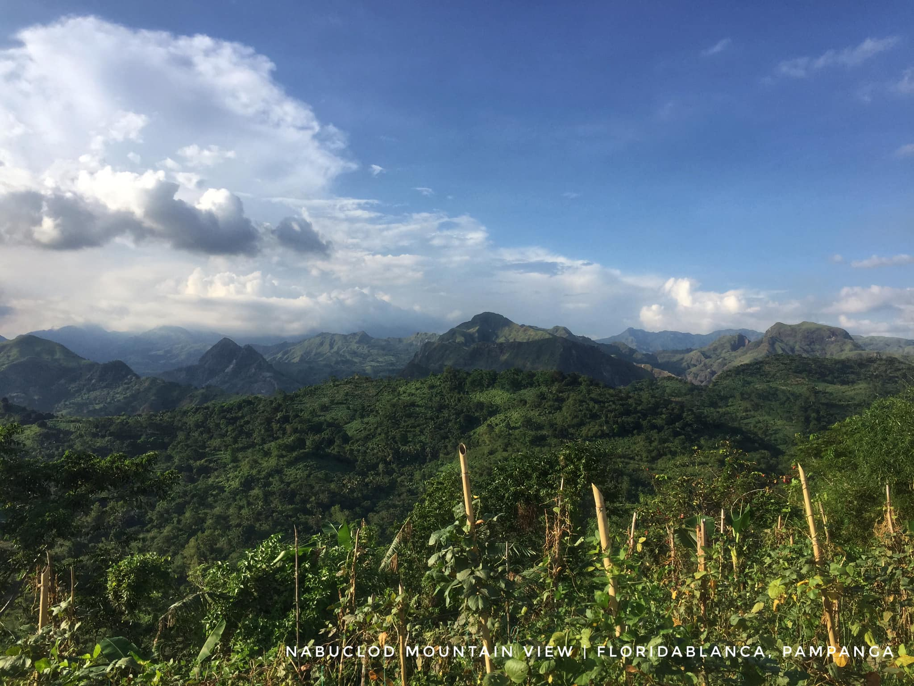
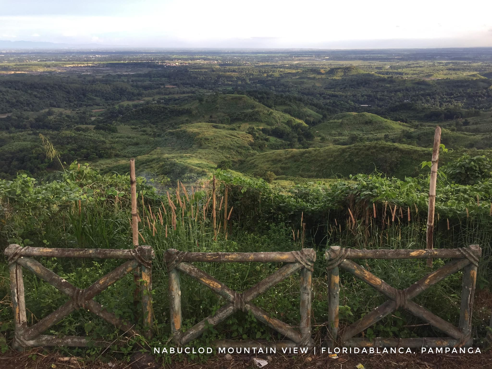

ConneAeta | Ethical Documentation
Capturing with Consent
Photos are powerful tools for storytelling, but they must never come at the expense of dignity. In Nabuclod, we practice "Consent-First" photography—ensuring that every frame honors the subject and their heritage.
📸 The Photographer's Protocol
Ask First
Always seek verbal or gestural permission before pointing your lens. A smile and a respectful "May I?" go a long way.
No Sacred Spaces
Avoid photographing rituals or sacred areas unless specifically invited to do so by a community elder.
Children's Privacy
Be extra cautious when photographing children. Always secure permission from a parent or guardian first.
Share the Result
Whenever possible, show the person the photo you took. It turns a "take" into a "shared moment."
✨ Scenes of Nabuclod

The rolling hills of the ancestral domain.

Heritage in every detail.